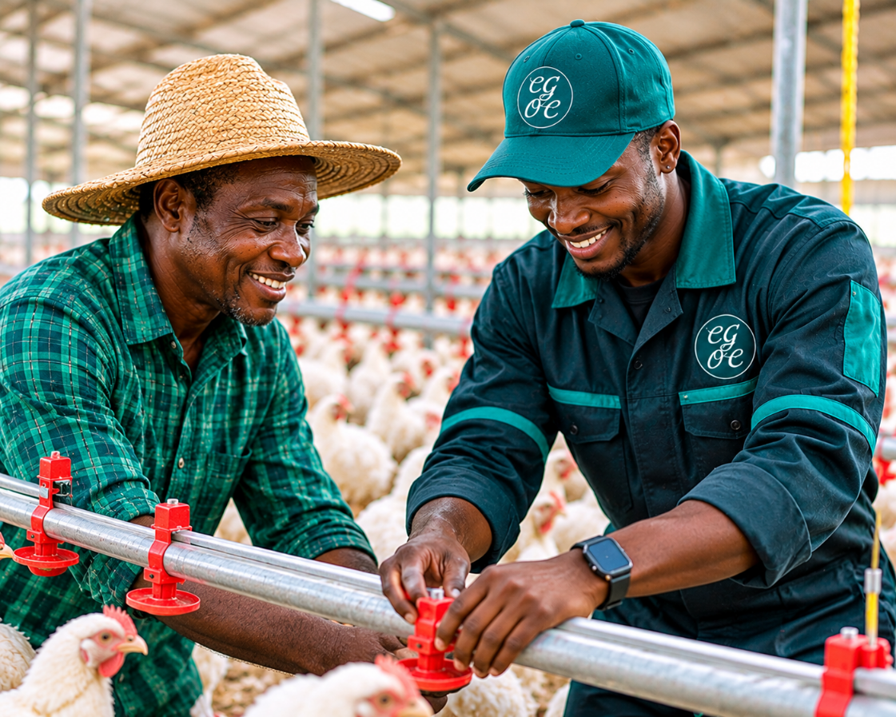
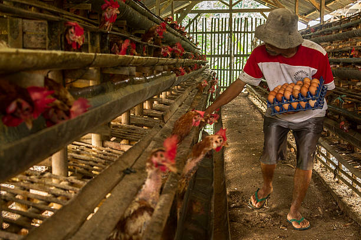

01
Farm design and construction
Practical planning and construction of farm buildings and facilities, with layouts designed around the work, animals, equipment and daily movement within the farm.

C.G. OKAFOR CO. BUSINESS
We provide practical farm design, construction, equipment and automation solutions that help farmers work more efficiently, reduce physical strain and manage daily farm operations with greater ease.
Discover what we doWHO WE ARE
Okafor Farm Technology focuses on the practical side of running a farm. We help farmers plan and build functional farm facilities, select suitable equipment and put systems in place that make everyday work easier to carry out and manage.
From the layout of a poultry house to the equipment used to feed, water and care for livestock, our focus is on useful technology that solves real farm problems and supports efficient operations.
OUR AREAS OF FOCUS
We bring together three practical areas to help farmers establish, equip and operate their farms more efficiently.
Practical planning and construction of farm buildings and facilities, with layouts designed around the work, animals, equipment and daily movement within the farm.
Equipment and practical tools that reduce repetitive manual work, improve the handling of farm tasks and help workers complete daily operations with less strain.
Automated systems for routine farm activities, helping improve consistency, save time and make important operations easier to monitor and manage.
WHAT WE PROVIDE
We look at how a farm operates as a whole: the buildings, the equipment, the movement of people and animals, and the everyday tasks that keep production going.

Farm layouts and functional buildings planned around the operation, including suitable space, workflow, access and provision for equipment and livestock.
Practical farm equipment and installation support to make feeding, watering, handling, cleaning and other routine activities easier to perform.
Systems that help automate repetitive tasks, support more consistent operating conditions and reduce the amount of manual attention routine activities require.
HOW WE APPROACH FARM TECHNOLOGY
Good farm technology should solve a real problem. We consider how work is currently done, identify where time and effort are being lost, and recommend practical improvements that suit the farm's operation and needs.
Look at the farm, its facilities, daily tasks and operating challenges.
Identify suitable designs, equipment or systems for the work that needs to be done.
Put practical solutions in place to make farm operations easier and more efficient.
LET'S BUILD A BETTER FARM
Talk to C.G. Okafor Co. about farm design, construction, equipment and automation for your operation.
Contact Us